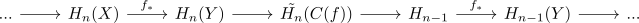

long exact sequence of homology for a mapping cone
Proposition
Let $f: X \rightarrow Y$ be a continuous map. Then there exists a long exact sequence

Proof
Consider the pair
\begin{align*}
(C(f),C^{+}(X))
\end{align*}
where $C^+(X)$ is the upper half part of the cone on $X$, which glued onto $Y$ to form $C(f)$. This pair is quasi-isomorphic to $(C(f),*)$ since $(C^+(X)$ is contractible.
By excision there is a quasi-isomorphism
\begin{align*}
C_*^{\mathrm{sing}}(C(f),C^+(X)) \cong C_{*}^{\mathrm{sing}}(C(f) \setminus \{\infty\}, C^+(X) \setminus \{\infty\})
\end{align*}
where $\infty$ is the cone point of $C^+(X)$
The latter is quasi-isomorphi to $\mathrm{Cyl}(f),X)$
Therefore we get